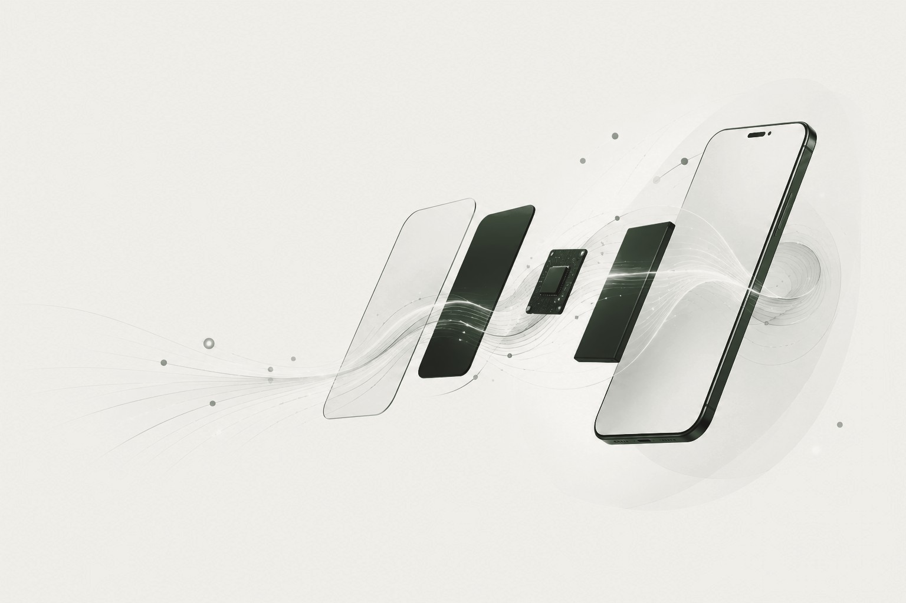

Velocità ritrovata
App e processi superflui non rallentano più ogni gesto. Il telefono risponde come dovrebbe, subito.
SURAN dà nuova vita agli smartphone Android che possiedi già. Più veloci. Più semplici. Più tuoi.
Posti limitati. Nessun costo.

Non è rotto. Non è troppo vecchio per essere usato. È solo diventato lento, ingombro di app che non apri più, con una batteria che non arriva a sera.
Così l'hai sostituito. Non perché non funzionasse più — ma perché nessuno ti ha mai mostrato come farlo funzionare bene ancora.
SURAN interviene sul software del dispositivo che hai già. Rimuoviamo il superfluo. Eliminiamo i rallentamenti. Ricostruiamo l'esperienza attorno a ciò che conta: chiamare, scrivere, muoversi nel mondo.
Il risultato non è un telefono diverso. È lo stesso telefono, senza tutto quello che lo rallentava.
Ci dici che telefono hai. Bastano due minuti.
Ti accompagniamo in ogni fase, con i tuoi dati sempre al sicuro.
Un telefono più leggero. Una mente più leggera.
| Prima | Dopo SURAN | |
|---|---|---|
| Avvio app | Lento, imprevedibile | Immediato |
| Batteria | Non arriva a sera | Dura tutto il giorno |
| Schermata home | Affollata, caotica | Essenziale, chiara |
| Notifiche | Continue, invadenti | Solo quelle che contano |
| Sensazione d'uso | Frustrazione | Calma |
Nessun componente cambiato. Nessuna scocca sostituita. Solo tutto ciò che non serviva più, tolto.
App e processi superflui non rallentano più ogni gesto. Il telefono risponde come dovrebbe, subito.
Meno in esecuzione, più ore di batteria. La stessa scocca, un giorno intero in più.
Nessuna schermata affollata, nessuna icona che compete per la tua attenzione. Solo ciò che usi davvero.
Le notifiche tornano a essere una scelta, non un assedio.
Ogni intervento è pensato per rispettare ciò che è tuo, dall'inizio alla fine del processo.
Il Programma Beta è gratuito, ed è aperto a un numero limitato di partecipanti. In cambio del tuo tempo e della tua sincerità, avrai accesso a SURAN prima di chiunque altro — e un ruolo reale in ciò che diventerà.
Non ti proponiamo un prodotto finito. Ti chiediamo di aiutarci a costruire quello giusto.
Candidati al Programma BetaSì. Ogni fase del processo è progettata per proteggere le tue informazioni personali. Non accediamo a nulla che non sia necessario, e ti guidiamo passo per passo prima di ogni intervento.
Stiamo definendo l'elenco completo insieme ai primi partecipanti al Beta. Se hai un dubbio sul tuo modello, candidati comunque: te lo diremo di persona.
Nulla. Il Programma Beta è gratuito. In cambio, ti chiediamo solo un feedback onesto su come stai vivendo l'esperienza.
No. Ti accompagniamo noi in ogni passaggio, con un linguaggio semplice e senza scorciatoie tecniche.
Ti contatteremo direttamente nei prossimi giorni. Nessuna attesa anonima: una risposta vera, da persone vere.
Ci vogliono due minuti. Ti risponderemo di persona.
Non serve comprarne uno nuovo. Serve solo dargli la possibilità di tornare quello che era — o di diventare qualcosa di meglio.
Due minuti. Nessun impegno.